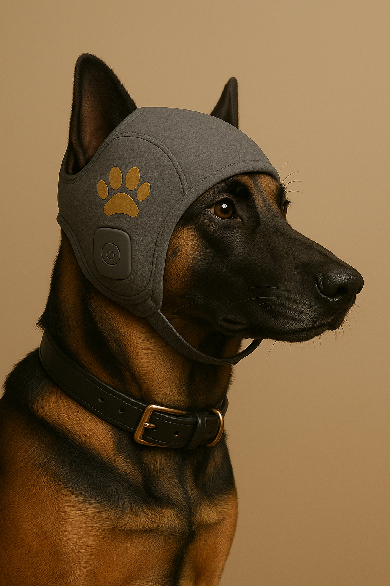

FR
|
EN
Pawsound – Smart Cap for Dogs

Il s’adapte aux émotions de votre chien pour réduire son stress et améliorer son bien-être.
En savoir plus
Fonctionnalités clés
Capteurs émotionnels intégrés
Diffusion de sons apaisants personnalisés
Réduction du stress en temps réel
Module GPS intégré
Design confortable et ajustable
Application mobile de suivi comportemental